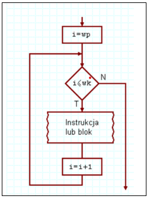
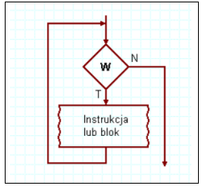
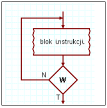

for (zainicjowanie_zmiennej; warunek_kończący_wykonywanie_pętli;
zmiana_zmiennej) {
kod który zostanie wykonany pewną ilość razy
}

while (wyrażenie_sprawdzające_zakończenie_pętli) {
...fragment kodu który będzie powtarzany...
}

Do
{
...fragment kodu który będzie powtarzany...
} while (false)
